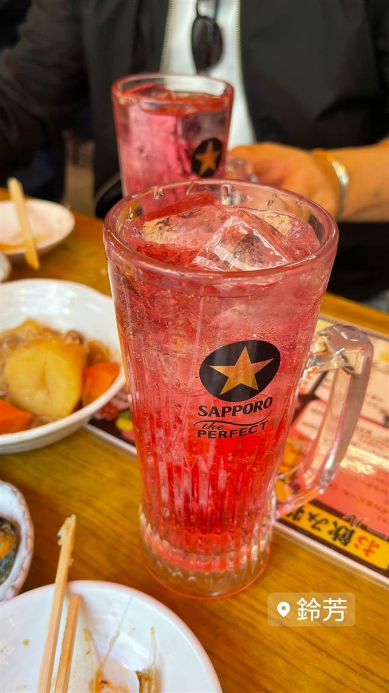

鈴芳
ホッピー通りで数少ない樽生ホッピーと韓国風牛すじ煮込み
鈴芳
浅草ホッピー通りにある1970年代創業の老舗居酒屋。数少ない樽生ホッピーの提供店として知られ、名物の韓国風牛すじ煮込みと合わせて楽しめる。
TRIVIA
豆知識
- ホッピー通りで樽生ホッピーを飲めるのはここだけとされる。
REVIEWS
世間の評判
3.48食べログ
もつ煮込みと生ホッピーの名店
- ハチノスやもつ煮込みなど煮込み料理の味の良さを評価する声が多い
- 下町らしい活気ある雰囲気を観光客にも地元客にも人気という声がある
- 煮込み以外の料理も提供スピードが早くて待たずに楽しめたという声がある
- 常に混雑していてカウンターもテーブルも満席になりやすいという声がある
食べログ 口コミ748件
| 創業 | 1974年頃創業（2021年時点で開店47年） |
|---|---|
| 看板 | 樽生ホッピー、韓国風牛すじ煮込み |
| こだわり | ホッピー通りで数少ない樽生ホッピーを提供する店で、白・黒・半々など飲み方が選べる。 |
| どこから | 都心 |
| 営業時間 | 月 11:30-21:00 火 休み 水〜日 11:30-21:00 |
| 予算 | 昼 ¥2,000～¥2,999 夜 ¥2,000～¥2,999 |
| 場所 | 浅草（つくばEXP） 東京都台東区浅草2丁目（ホッピー通り） |
| メモ | 浅草ホッピー通りに位置する老舗居酒屋。 |
食べたもの：赤い酎ハイと料理
NEARBY
近い店・同じ系統の店
-
 ★
喫茶店 浅草
金龍（喫茶店）
元は旅館だった建物で味わうサイフォン式コーヒー
昼 ¥1,000～¥1,999 夜 ¥1,000～¥1,999
★
喫茶店 浅草
金龍（喫茶店）
元は旅館だった建物で味わうサイフォン式コーヒー
昼 ¥1,000～¥1,999 夜 ¥1,000～¥1,999
-
 ★
二郎系(インスパイア) つくばエクスプレス浅草駅
自家製麺 No11 ASAKUSA
二郎→富士丸の系譜を継ぐ、板橋人気店の浅草2号店
昼 ¥1,000～¥1,999 夜 ¥1,000～¥1,999
★
二郎系(インスパイア) つくばエクスプレス浅草駅
自家製麺 No11 ASAKUSA
二郎→富士丸の系譜を継ぐ、板橋人気店の浅草2号店
昼 ¥1,000～¥1,999 夜 ¥1,000～¥1,999
-
 うなぎ 浅草
初小川（はつおがわ）
注文を受けてから捌く、継ぎ足し辛口だれの江戸前うな重
昼 ¥3,000～¥3,999 夜 ¥3,000～¥3,999
うなぎ 浅草
初小川（はつおがわ）
注文を受けてから捌く、継ぎ足し辛口だれの江戸前うな重
昼 ¥3,000～¥3,999 夜 ¥3,000～¥3,999
-
 カフェ 浅草
浅草きびだんご あづま
無添加ゆえ時間が経つと硬くなるため実演販売でできたてを提供している
昼 ～¥999 夜 ～¥999
カフェ 浅草
浅草きびだんご あづま
無添加ゆえ時間が経つと硬くなるため実演販売でできたてを提供している
昼 ～¥999 夜 ～¥999
-
 アイス・ジェラート 浅草
舟和（本店）
芋ようかんを考案しみつ豆を喫茶で初めて出した元祖の老舗和菓子店
昼 ¥1,000～¥1,999 夜 ¥1,000～¥1,999
アイス・ジェラート 浅草
舟和（本店）
芋ようかんを考案しみつ豆を喫茶で初めて出した元祖の老舗和菓子店
昼 ¥1,000～¥1,999 夜 ¥1,000～¥1,999
-
 スイーツ 浅草
三鳩堂
鳩・提灯・五重塔の三種を店頭で焼き上げる人形焼
スイーツ 浅草
三鳩堂
鳩・提灯・五重塔の三種を店頭で焼き上げる人形焼
ONSEN & SAUNA